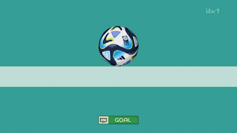

Struggles of the USWNT: A Deeper Look into the 2023 Women's Wos World Cup
By Lauren Okamoto | November 19, 2023

Coming into the 2023 Women’s World Cup, the U.S Women’s National Team had the opportunity to do something unprecedented. The two-time reigning champs had the chance to three-peat; a feat so hard that it's never been achieved before in World Cup History. The team aimed to etch their name into the annals of sports' greatest achievements, and while this World Cup was indeed historic for the US Women’s National Program, it was historic for all the wrong reasons. To sum up how the tournament went for the U.S. take a look at the goal that sealed their fate.
A matter of millimeters was the final blow to what had been a rather poor campaign from the defending champs. This Round of 16 exit marked the U.S Women’s earliest exit from a big tournament.
Problems with Midfield
One of the areas the USWNT struggled with the most in the 2023 World Cup was their midfield. Midfielders have the essential job of mediating between the defense and attack. A strong midfield dominates play in the middle and sets up the strikers for an attack often through quick transition passes. Below are two passing network graphs that demonstrate the passes from the USWNT Midfielders to their strikers in both a 2019 and 2023 World Cup Group Stage game. The lighter shades of yellow-orange on the map indicate areas with high pass density, signifying that the majority of the USWNT's passes were concentrated in those locations. In contrast, the darker purple colors represent areas with low pass frequency, indicating that only a few passes occurred in those regions. As seen below in the 2023 visual, most of the midfield passes to the forwards occurred on the same side of the field. This lack of variety made the USWNT’s play rather predictable and led to the underutilization of several key players, namely the strikers, making it difficult to not only score but maintain possession of the ball. This visual stands in stark contrast to the 2019 World Cup game against Chile in which the U.S. won 3-0. Not only are their passes more evenly distributed, they occur primarily in the attacking half and there is a much stronger connection between the midfield and the strikers, as seen by the number of passes. To make matters even more interesting, in the 2019 game, the USWNT did not even play some of their most formidable players such as Alex Morgan and Megan Rapinoe, truly demonstrating the dominance of that team.
Problems with Finishing:
Certainly, the lack of chemistry between the midfield and forwards played a giant role in the U.S’s fate, but I also wanted to take a look at the U.S’s scoring opportunities to identify whether the team was simply not getting enough shots on goal, or if it was a matter of being unable to finish. The motivation behind this inquisition stems from the fact that the U.S. had only one win in this world cup. A 3-0 win against Vietnam was not only the only win the U.S. had, but it was also the only game where they scored more than 1 goal in regulation. This stands in stark contrast to the 2019 team who outscored their opponents 18-0 in the Group Stage. To take a look at scoring opportunities, I decided to look at two games. The first game is once again, U.S. vs Portugal. This game is particularly noteworthy as it ended in a 0-0 draw. The U.S. had entered the tournament ranked No. 1 in the world, and should have easily beaten No. 21-ranked Portugal, making their scoreless tie quite surprising. Below are shot charts for both teams. The size of each point represents the Expected Goal stat for that given shot. The bigger the point, the greater the Expected Goal value was, meaning that the shot was one of quality.

As seen from the shot charts, not only did the U.S. have a lot more shots on goal, but several of their shots also had a high xG (Expected Goal) value. This indicates that the U.S. was able to generate numerous quality shots, but was unable to finish them. This pattern of being unable to turn quality opportunities into goals was a pattern that ultimately plagued the U.S. and led to their elimination. Below are the shot charts for the Round of 16 Game, in which the U.S. lost to Sweden in penalties after tying in regulation 0-0. In both cases, if you had to guess who won the match only based on the charts, you’d most likely say the U.S. definitely won.
Overall, it was a very tough tournament for the USWNT. Not only did they experience their earliest elimination from a Major Tournament in the entire history of the program, but it also marked the final World Cup appearance for several U.S. soccer legends, including Megan Rapinoe. This article examines two facets in which the U.S. struggled. Lack of connectivity between the team, and the inability to score is a deadly combination that not even the defending champs could overcome. As such, it becomes increasingly interesting to see how the team adjusts moving forward into an Olympic year. Will they have the same fate? Or will they rise to the occasion and improve?